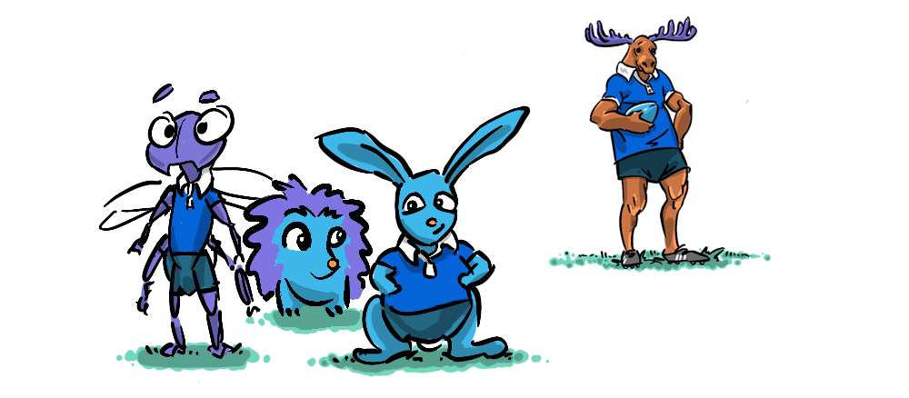

COACH KROHN ON LEADERSHIP
lessons from a life lived leading and developing leaders

INTRODUCING STUART
Coach Stuart (The Moose) Krohn is a big guy, with a booming voice, he stands up straight, shoulders back, with a certain amount of swagger, and commands attention whenever he walks in the room—but that's not what makes Coach Krohn a great leader.
A COLLABORATIVE TEAM
I've collaborated with Stuart for over a decade, and have observed him—taking notes. I'm not a natural leader myself, I'm a creative person who likes to have their head down in the details. I feel most comfortable when I'm in my own space, but it has been fascinating to watch someone who thrives on contribution. Stuart's an outstanding coach, who has gone from playing and coaching professional international rugby to founding and directing a rugby program in South Los Angeles for inner city school students.
"I wanted to make a positive impact on rugby development in America, particularly in an Inner City environment. I thought I could do both, and with the partnership and trust of the community, we have both developed rugby in the US and positively impacted hundreds of lives."—Stuart Krohn
MOVING MOVIES
I make films with Stuart, when, each year, he takes one boys' team and one girls' team on an international tour. These teams and these tours are nothing like what I remember high school sports to be like. These are a fulcrum for leveraging character. Coach Krohn challenges the students to break through personal barriers on and off the field—he's in the job of building the next generation of leaders.
"Leading is a verb. A leader is someone who leads by example and takes initiative. If you're not taking initiative then you're not a leader."
A LIFE LIVED LEADING
I contacted Stuart to ask him to write some of his thoughts about leadership to share on the blog. From my many conversations with Stuart over the years, leadership is something that has preoccupied him all of his life, and yet is something I see him evolving still to this day.
"Everybody has their own unique style of leading. You also need to be continually growing from your leadership experiences, you have to be reflective and honest with yourself. You also have to give yourself grace because in a true leadership role you're going to make mistakes."
CREATING THE CONDITIONS FOR LEADERSHIP
The tours are a huge undertaking—two weeks travelling on planes, trains and automobiles every couple of days to a new city, sometimes even between countries, organising games, tournaments, home-stays, navigating relationships, study time. They are really too much for one person to wrangle and that's where Stuart places his trust in those around him, from his coaching partners Lisa Finegan and David Hughes, to returning student intern and assistant coaches, to team captains and players, to me. He creates situations where leadership is a required, and people rise to the occasion.
"That is the thing that has most evolved about my own leadership; I share leadership much more with the group now, including you, when making decisions on tour. You have to be ready to pivot as a leader, instinctively almost, just like in a game. Leaders begin to develop when they are young and it's important to give them legit opportunities to lead and make decisions."
This hasn't come easily to Stuart, it takes a particular type of doggedness to take these sorts of risks and really make things happen, and Stuart has that doggedness in spades.
"Perfect example: The first time we played at Yasawa High School, Denecia was the captain. The Yasawa team wanted to play our girls one more game, but Denecia felt the team had reached their physical and psychological limit. I asked Denecia if she thought they could play, wanting to hear her say "yes", but she said no. I vacillated in my mind about trying to persuade her to change her mind, but I decided to trust Denecia's decision-making. That sticks out in my mind. It was an opening to allow more trust for my leadership team."
RETURNS WITH INTEREST
Stuart's investment in Denecia, trusting her to advocate for her team in that moment, communicated to her the respect he has for her as a leader. Now, after having attained her Master's in Nutrition, Healthspan, and Longevity, Denecia returns each winter to coach alongside Stuart and take new teams on tour.
"I am passionate about what I do. This isn't just an extra activity, it is a life changing opportunity, and I know that and care a lot that as many scholars as possible are impacted. I'm driven and truly believe that together we can acheive greatness, even if we are a small group. I have the courage to take positive risks. I value each scholar and assistant coach and create space for them all to be impact players. I visualise where our teams and programs can go, what we can accomplish. I’m a dreamer who takes steps in the direction of making dreams come true."
CONFLICT
As you can imagine, not everything is plain sailing on tour. There are often clashes of personality, and over the days the pressure of being in each other's business builds to breaking point—this feels almost by design, providing a chance to learn and grow. In these moments Stuart faces it head on, but allows for reflection.
"If it's crucial, I will deal with it immediately. I trust in communication. I know that people's immediate reactions and feelings might not be their final feelings or thoughts. Ideally we reflect and communicate with trust.
Some conflicts are actually internal conflicts, with the same person repeating the same conflict with different people they meet, because they project their internal struggle onto each person that doesn't go along with them. But if you are coming from a positive caring space then over time the conflict can be resolved."
REFLECTION
On this year's tour in Japan, Coach Denecia reminded the team that back in her day the players would do talent shows in between games, which resulted in a range of performances throughout the tour—there ended up being more poetry than rugby! The students shared thoughts, songs, dance, drama, overcoming stage-fright and exploring areas of vulnerability in public—a key skill for leaders.
This is an area in which Coach Krohn excels—he is willing to be vulnerable in front of his players. In reflective sessions on every tour he leads emotionally, invariably delivering a tearful reverie about something deeply important to him—a genuine moment that is always unique, but with the consistent effect of communicating to his players—this is a safe space to share.
The results are often cathartic outpourings from students coping with struggles, processing past traumas and resolving present conflicts on tour (they also, incidentally, make for great moments on film).

HANDING OVER THE REIGNS
Stuart is nearing the end of his career, and looking to hand over the responsibility for the ICEF Rugby Program to new leadership. In the same vein, with the films, we are passing the torch over to the students. For our final three tours, I am stepping back and am taking a mentor (leadership!) role, teaching the students how to use the equipment and offering guidance so they can tell their own stories—allowing their natural youthful creativity to inform the direction of this new series of 'student cuts'.
SO...
That brings me to what makes Stuart such a special leader. By creating the conditions for leadership, by throwing people in the deep end, but with relentless encouragement and trust, Coach Krohn makes leaders of people who had never seen that capacity in themselves—even me!